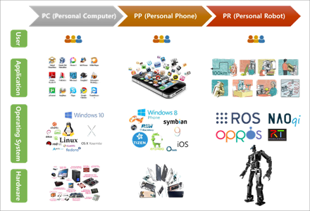
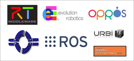

Nền tảng phần mềm¶
Máy tính cá nhân và điện thoại cá nhân là những loại sản phẩm công nghệ thông tin. Chúng bao gồm module phần cứng cho phép tích hợp các phần cứng khác nhau và hệ thống điều hành quản lý phần cứng này. Các phần cứng dựa trên môi trường phát triển phần mềm được cung cấp bởi hệ điều hành có ứng dụng cung cấp dịch vụ khác nhau. Phần cứng, hệ điều hành, phần mềm, người dùng tạo nên hệ sinh thái của ngành CNTT.
Người ta có thể nói rằng các yếu tố phổ biến mà cho phép sự thành công của các máy tính hoặc điện thoại cá nhân là sự xuất hiện của hệ điều hành (Windows, Linux, Android, iOS, vv). Sự xuất hiện của hệ điều hành phần cứng và phần mềm thống nhất. Dẫn đến các mô đun của phần cứng sản xuất hàng loạt giảm chi phí, phát triển chuyên biệt mang hiệu suất cao.
Bên cạnh đó, các kỹ sư có khả năng phát triển các chương trình ứng dụng trong môi trường phát triển được cung cấp bởi hệ điều hành ngay cả khi không một sự hiểu biết thấu đáo về phần cứng. Và một nhóm công việc mới gọi là App Developers. Nó không tồn tại thậm chí 10 năm trước đây đã được giới thiệu trong lĩnh vực điện thoại thông minh
Chúng ta mong muốn rằng từ máy tính cá nhân, điện thoại cá nhân và giờ đây là robot cá nhân sẽ phát triển tương tự theo hướng đó.
{kind=link}
{kind=link}
NỀN TẢNG PHẦN MỀM CỦA ROBOT¶
Bạn đã hiểu được sơ qua về nền tảng phần mềm nói chúng rồi chứ! Giờ đây chúng ta sẽ cùng tìm hiểu xem liệu robot có thể áp dụng được nền tảng phần mềm như máy tính và điện thoại thông minh hay không! Một nền tảng được chia thành nền tảng phần mềm và nền tảng phần cứng. Một nền tảng phần mềm robot bao gồm: Các công cụ để phát triển các ứng dụng Robot như mô phỏng phần cứng, điều khiển thiết bị cảm biến, quét và lưu bản đồ, thao tác và quản lý gói, thư viện, gỡ lỗi và các công cụ phát triển. Nền tảng phần cứng Robot không chỉ nền tảng nghiên cứu như robot di động, máy bay không người lái, người máy, mà còn các sản phẩm thương mại như Pepper SoftBank Jibo MIT Media Lab đang sắp được ra mắt.
Trừu tượng phần cứng là việc bạn có thể lập trình điều khiển robot mà không cần hiểu nhiều về phần cứng. Nó cũng giống như việc lập trình ứng dụng cho điện thoại thông minh. Trái nghiệp với việc phát triển trước đây là người phát triển phải thiết kế cả phần mềm lẫn phần cứng. Bây giờ nhiều kĩ sư phần mềm ngành công nghệ thông tin cũng bắt tay vào viết các ứng dụng cho phần mềm robot đóng góp vào sự phát triển của robot.
Trong những nền tảng phần mềm, nền tảng chính là hệ điều hành robot. Nhật Bản có hệ điều hành(OpenRTM), Châu Âu có (OROCOS), Hàn Quốc có OPROS... Rất nhiều nền tảng phần mềm. Nhưng những nền tảng phần mềm đó đang gặp nhiều vấn đề. Vì vậy các nhà nghiên cứu Robot từ khắp nơi trên thế giới đang hợp tác để tìm ra giải pháp. Phổ biến nhất nền tảng phần mềm robot là ROS, một hệ điều hành Robot sẽ được đề cập đến trong tài liệu này.
Một vài hành động như gắp vật, cảm biến vật cản và lập kế hoạch di chuyển có vẻ như dễ với con người nhưng lại cực kì khó khăn đối với robot và đội ngũ phát triển. Để giải quyết vấn đề này cần có sự hợp tác của cộng đồng robot trên toàn thế giới. Khi đó mỗi người sẽ làm một nhiệm vụ chuyên môn. Tôi ví vụ một công ty muốn chế tạo một robot dọn rác thay những cô lao công. họ muốn tập trung công sức vào việc sử lý ảnh còn việc chuyển động, lập trình đường đi sẽ mượn ứng dụng của công ty khác thông qua ROS. Từ đó sẽ nhanh chóng tạo ra robot với sự hoàn thiện cao.
BẠN NÊN SỬ DỤNG NỀN TẢNG PHẦN MỀM ROS¶
1. Làm giảm thời gian phát triển. ROS cung cấp các công cụ khác nhau và các phần mềm được sử dụng phổ biến. Nó cho phép người sử dụng tập trung vào các tính năng mà họ quan tâm, kết hợp với tái sử dụng chương trình tương ứng còn lại sẵn có đề làm giảm thời gian phát triển. Đồng thời, họ có thể chia sẻ các chương trình mà họ đã phát triển để những người khác có thể tái sử dụng nó. 2. Để ghép nối các chương trình này ROS cung cấp các module, các node đễ dễ dàng quản lý và điều khiển việc tương tác giữa node này với node khác. ROS có thể thay thế các nền tảng IOT. 3. Sự hỗ trợ của các công cụ phát triển. ROS cung cấp công cụ gỡ lỗi, công cụ trực quan 2D (rqt), công cụ trực quan 3D (RViz), mô phỏng 3D(GAZEBO)... 4. Một cộng đồng lớn: năm 2017 có hơn 5.000 gói đã phát triển và chia sẻ tự nguyện. 18000 trang wiki để giải thích chi tiết từng gói đó. Những bài viết về ROS có hơn 36000 bài tạo ra một cộng đồng cực kì rộng lớn. 5. Sự hình thành của hệ sinh thái như chúng ta đã biết ở trên.
TƯƠNG LAI MÀ ROS SẼ MANG LẠI¶
Như bạn thấy ở trên, nhiều nền tảng phần mềm robot đang xuất hiện, nhưng thật khó để kết luận cái nào là tốt hơn. Lý do là mỗi thứ trong số đó cung cấp các chức năng độc đáo và thuận tiện riêng như việc thêm các tính năng cho robot, tính năng truyền thông, trực quan, mô phỏng, thời gian thực và nhiều hơn nữa. Tuy nhiên, giống như các hệ điều hành hiện tại của máy tính cá nhân, các nền tảng phần mềm robot được lựa chọn bởi người dùng sẽ trở nên phổ biến hơn trong khi những nền tảng khác đang giảm dần.
Vậy trong những nền tảng phần mềm robot hiện đang tồn tại chúng ta nên làm quen với cái nào là tốt nhất? Câu trả lời tốt nhất sẽ là ROS. Không chỉ vì cộng đồng hoạt động mạnh mà còn có nhiều các thư viện khác nhau, khả năng mở rộng và tiện lợi của sự phát triển, không có nền tảng nào khác làm được như ROS.
{kind=link}